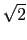

Factoriser dans  :
:
x4 + 1
Si l'on veut une factorisation réelle, afin de connaitre le réel qui sert
dans la factorisation, on coche complex dans l'écran de configuration
du cas et on tape tout d'abord :
solve(x^4+1,x)
On trouve :
[sqrt(2)/2+(i)*sqrt(2)/2,sqrt(2)/2+(i)*(-(sqrt(2)/2)),
-sqrt(2)/2+(i)*sqrt(2)/2,-sqrt(2)/2+(i)*(-(sqrt(2)/2))]
On voit que les racines dépendent de  donc on tape :
factor(sqrt(2)*(x^4+1))
On obtient :
sqrt(2)*(x^2+sqrt(2)*x+1)*(x^2+(-(sqrt(2)))*x+1)
Pour factoriser dans l'expression x4 + 1, il faut cocher
complex dans l'écran de configuration du cas et taper
cFactor(sqrt(2)*(x^4+1)) (cf cFactor.